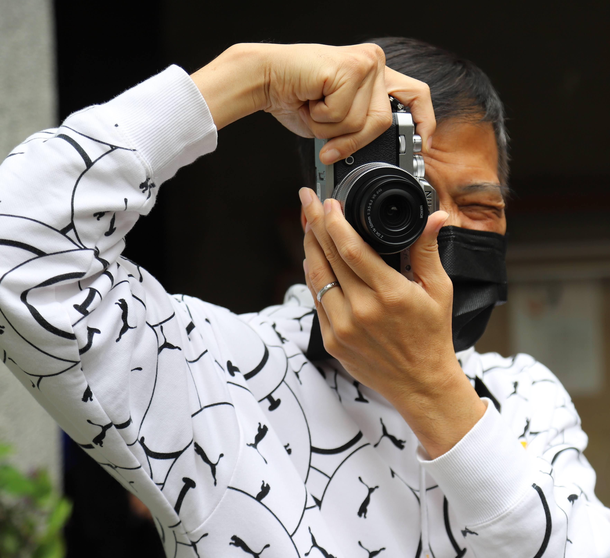

Winton
家族空間
✦
相簿
影片
AI 資訊
神學
Welcome · 歡迎來到我們的空間
記錄生命，
分享美好
攝影、信仰、AI 知識與家人的故事，
都在這裡匯聚。
探索我的頻道 →

@wintonh · 攝影與生活記錄
Family Album · 家族相簿
我們的珍貴時刻
‹
›
YouTube Channel
最新影片
前往頻道 →
▶
@wintonh · Winton Huang
▶
Winton Huang
攝影・生活・家族記錄
前往 YouTube 頻道
▶
最新上傳
前往頻道首頁
☰
所有影片
攝影與生活記錄
♫
播放清單
系列主題整理
AI Updates
AI 最新資訊
Claude Sonnet 4.6：推理能力大幅升級，多模態更強
2025-04-28
Google Gemini 2.5 Pro 正式發布，長文脈絡處理突破
2025-04-24
AI 輔助數位典藏：DSpace 9 整合 LLM 的新趨勢
2025-04-20
開源模型 Llama 4 在圖書館知識管理的應用研究
2025-04-15
Theology & Faith
神學最新資訊
系統神學
新約研究期刊最新一期：保羅書信詮釋的跨文化視角
2025-04-27
信仰與文化
當代福音信仰在亞洲神學院的傳承與發展近況
2025-04-21
教會歷史
宗教改革脈絡下的台灣基督長老教會歷史研究新進展
2025-04-14